this department is kind of a hit or miss. It really depends on your teacher and the people in your class. If you read the books properly and learn what style of writing your teacher likes, then you'll be fine
| class |
teacher(s) |
description |
| CP English 9-12 |
Heuer <3 |
worst classes ever. Would never take again. Do not take this class if you like to do work and are just bad at english. Just take honors,
you'll be fine |
| Honors English 9 |
ms. p <3 |
all around silly goofy time. No one took this class seriously and it is pretty easy to do well in. You will have no problem getting an A- or above in this class as long you pay attention to what you need to do. Great Expectations is the worst book you will ever read. |
| Honors American Literature |
Ms. Gilmore, Ms.Lipnick |
Questionable book list |
| Honors World Literature |
Quimby, John |
My favorite class ever. The most fun books to read - all from different parts of the world and all actually enjoyable to read. Projects are all very fun and the overall atmosphere is very fun. Best class ever would recommend 10/10. Very easy to get an A+ every marking period as long as you can write a little and actually do your work |
| AP Lang |
gilmore |
you had better like writing or you're not gonna like this one. Your grade in this class is solely based on the essays you write. |
| AP Lit |
thorpe, Mr.Y |
cruel and unusual punishment. If you make it out of this class, you are a real survivor. If you get Mr.Y, consider yourself lucky: it will be a chill class because he isn't here half the time due to forensics:))) |
| Book |
Rating |
Description |
| Romeo and Juliet (Freshman yr) 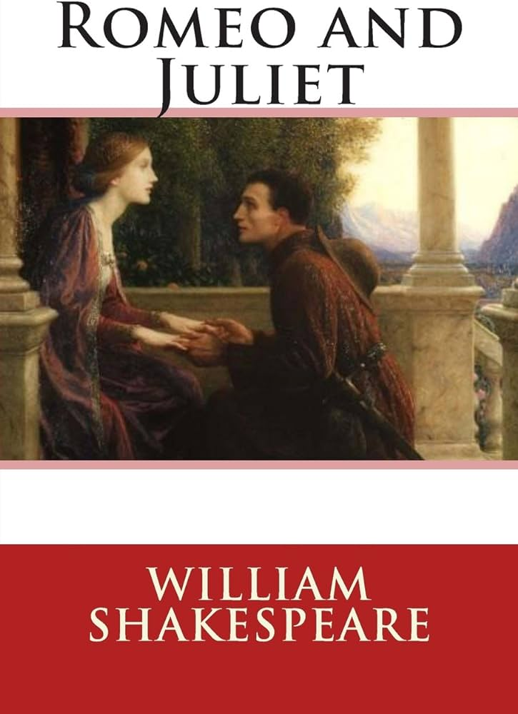 |
9.5/10 |
It was good writing, it is quite enjoyable to read although you won't understand the 'old english' at first glance it was a good book. -0.5 points because the age and the age/maturity gap is questionable by societal standards today (Romeo:16 yrs/ Juliet: 13yrs) |
| A Separate Piece 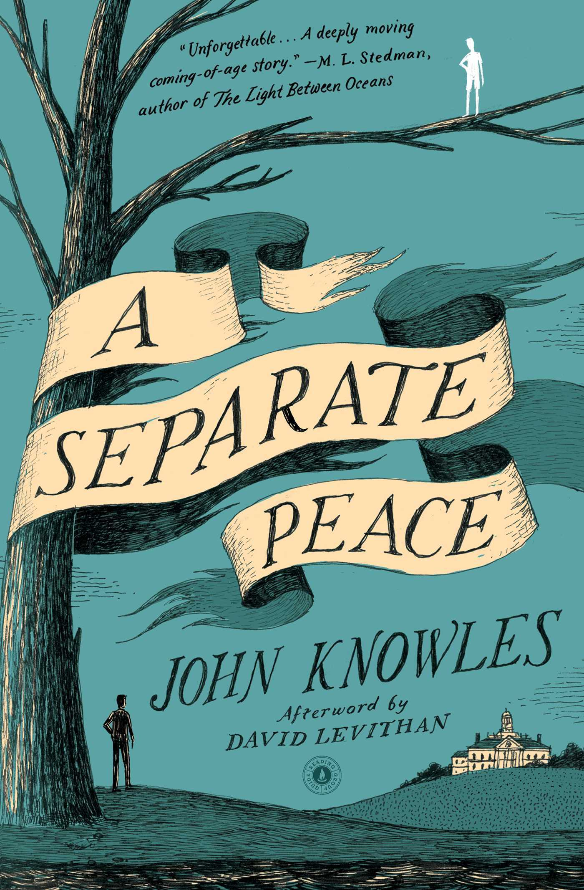 |
8/10 |
the poster child for homoerotic dark academia, but there are better ones. you will become attached to these characters. the book is a perfect tragedy, both inevitable and avoidable |
| Great Expectations 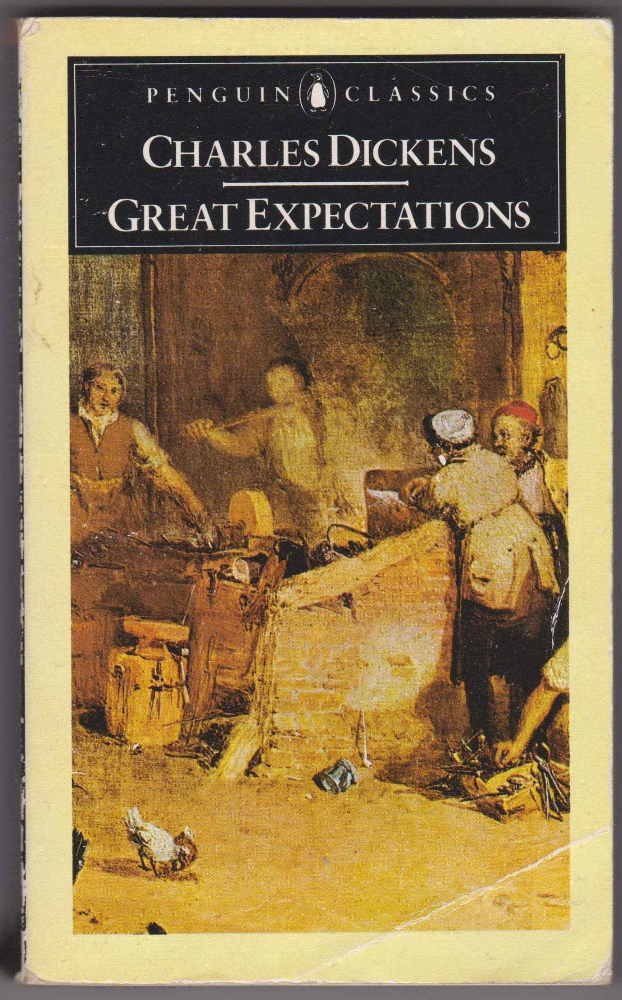 |
2.5/10 |
This book SUCKED. I am only giving it a 2.5 because it was still a story so it fullfilled the criteria of being a book. It was incredibly long and the story moved so slow you lose interest after reading one chapter. Don't even get me started on the ending. We can talk once you finish reading. I am sorry to Mr.Minicozzi but this was the only book I sparknoted because reading it was torture. |
| The Scarlett Letter 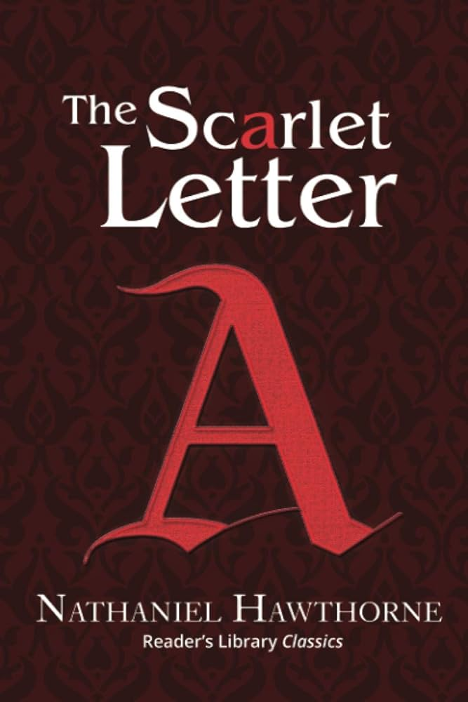 |
4/10 |
It was the worst book I read in Honors American Lit but not the worst book of my entire highschool career. None of the characters were interesting or compelling. I feel bad for Hester but she was just annoying and Hawthorne was even more annoying. |
| The Great Gatsby 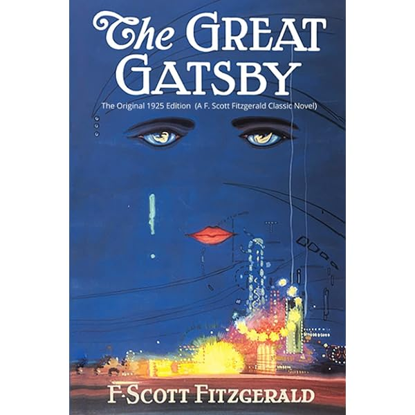 |
10/10 |
One of the best books I read in sophomore year english. It was an intersting plot, all the characters were interesting to, and it was a bit gay. I was never bored when reading it because I always wanted to know what happened next. The movie was pretty good too! |
| Ethan Frome 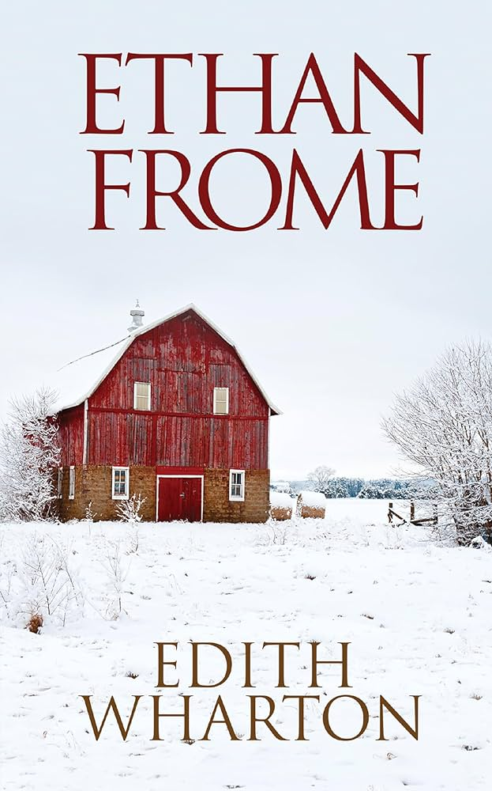 |
1/10 |
Bro was married to his cousin and wanted his other cousin. The main character is irritating beyond belief and the portrayal of women was horrendous. |
| Talking to Strangers 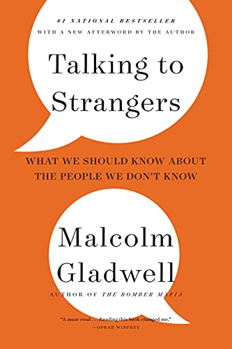 |
3/10 |
This book had a great point to get across but the execution was very bad. the evidence that he used to get his point across was not very good and it was just dry in general. It was not exciting to read. |
| Frankenstein 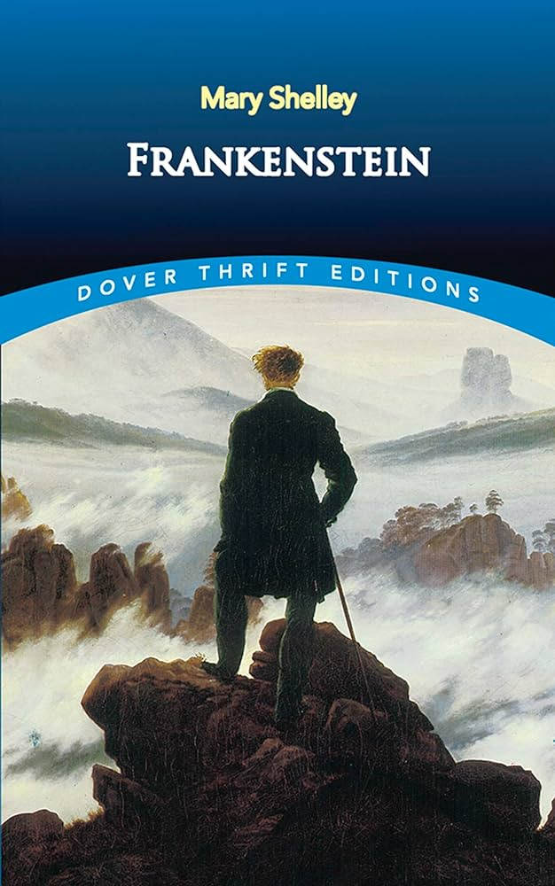 |
10/10 |
Gorgeously written horror that pulls you into the story. The main character is pathetic and tragic and ridiculously compelling and a little gay. Frankenstein's monster is beautifully portrayed and gut-wrenching. One of my favorite classics. |
| Macbeth 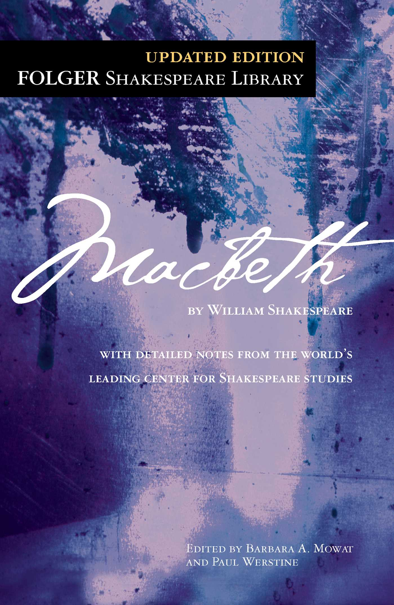 |
9/10 |
Well-written characters and Shakespeare's writing is beautiful as usual. Tragic in the best way. -1 because it could be a little dry in places but overall very good. |
| The Strange Case of Dr. Jekyll and Mr. Hyde 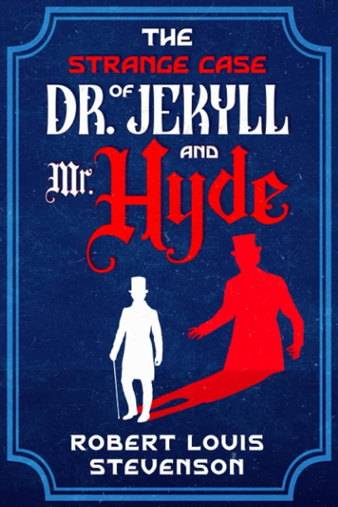 |
9/10 |
Very compelling as an allegory for addiction, queerness, and many other interpretations. Hard to put down once you've started reading. Ending was a bit sudden. |
| Dracula 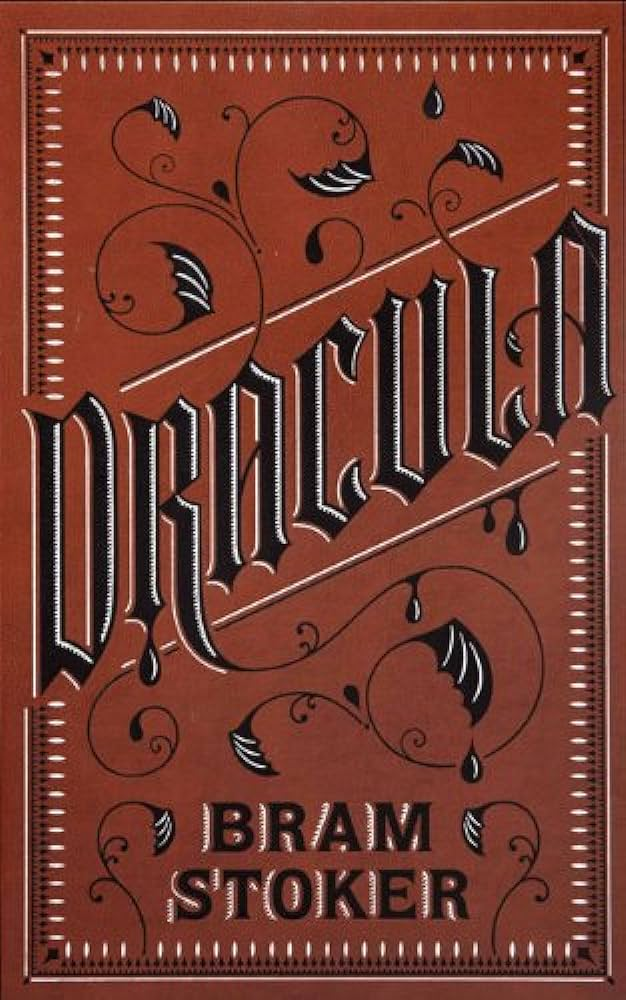 |
9/10 |
I enojyed reading this very much and it was written really well too. It defintely debunked many preconcieved notions I had about Dracula and there is a deeper meaning to the book. It was a good read overall :) |
| Like Water for Chocolate 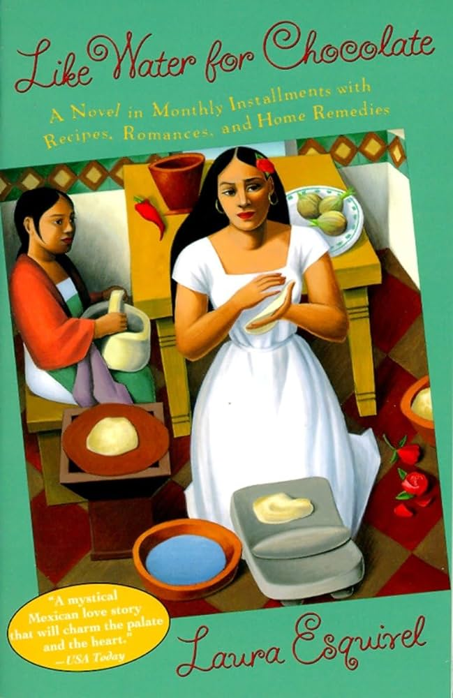 |
7/10 |
It was an interesting bok overall. There were a lot of elements of surrealism if you are into that you will like it. There is commentary on social class and unrequited love. There is a big emphasis on cultural expectations as well and the main character Tita basically just lives a miserable life. |
| Everything I Never Told You 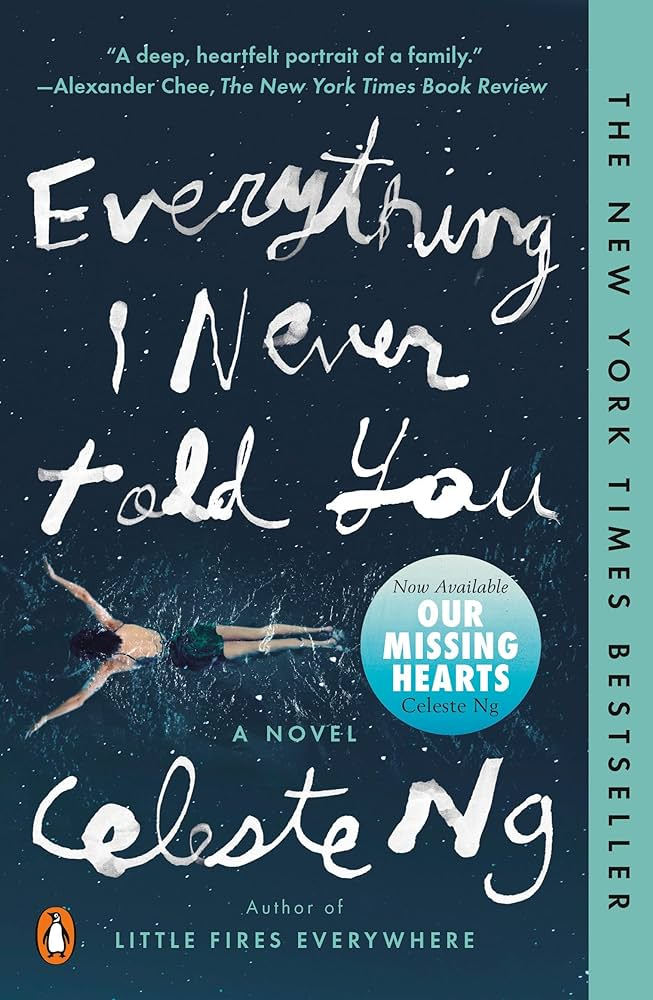 |
10/10 |
It was so deep and defintely relatble for immigrant families. Not everything is in your face so it forces you to udnerstand and interpret the nuanced inferences. Made me ugly cry. |
| The Relucatnt Fundamentalist 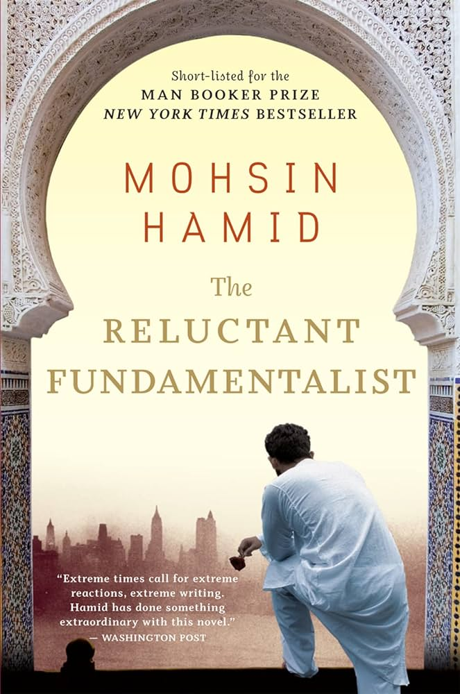 |
5/10 |
This book was weird. It was written from a very interesting perspective and not much is told about the other character in the book, so it is hard to infer what is happening. There was a good message but I think certain symbolisms and analysis will be hard to understand. |
| Interpreter of Maladies 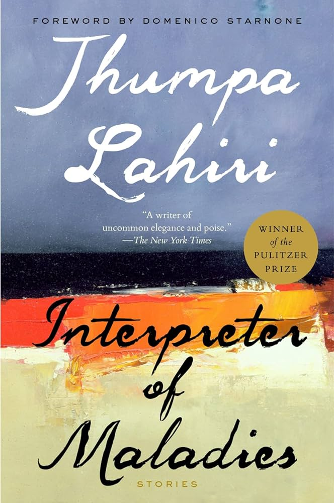 |
9.5/10 |
There was a focus on indian immigrant families and shared experiences. Some of these stories WILL MAKE YOU CRY (prepare a tissure box fo Ms.Sen's). There was a lot of cultural representation in this book. The only story that we didn't like was Fancy (there was no point to this story ) |
The Kite Runner  |
1000000/10 |
just read it. and prepare tissues. |
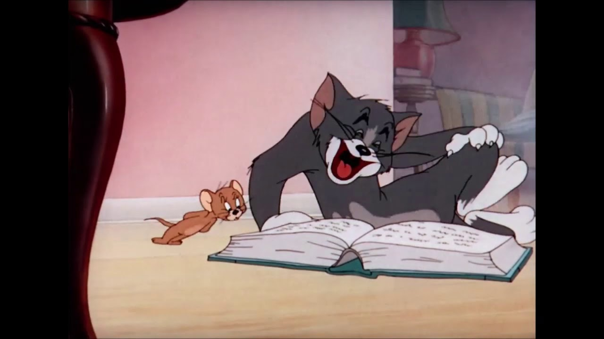